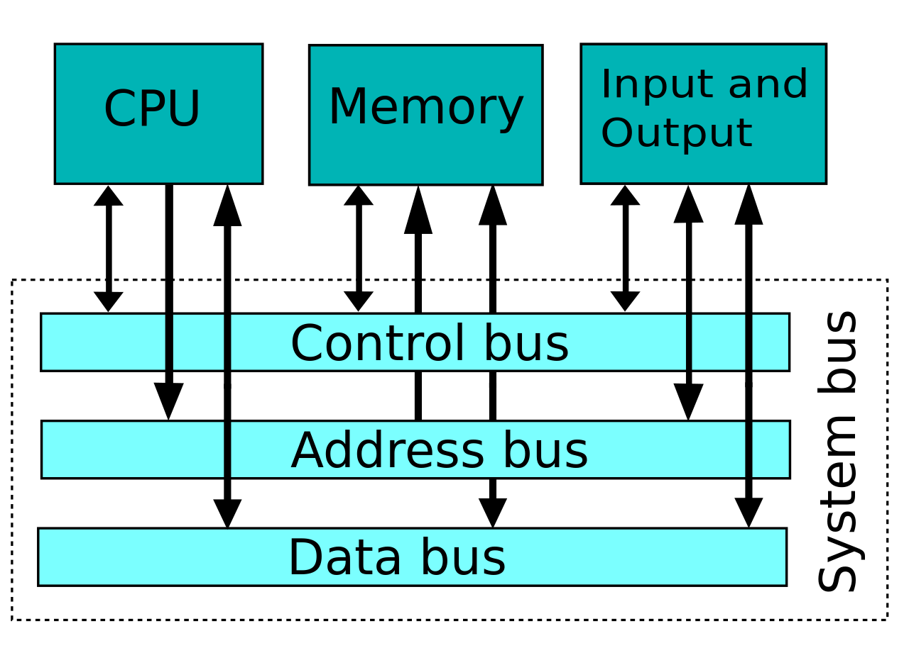

<div class="row">
    <div class="col">
        <div class="training-text-section">
            <p>
                As we begin our computer science journey, it is important to understand how a computer it setup under
                the hood. All modern computers follow the same basic design, or architecture, invented by Von Neumann in
                1945. The biggest exception is that modern computers use multiple busses as you see in the diagram,
                rather than one as originally proposed by Von Neumann.
            </p>
        </div>
        <div class="d-flex justify-content-center">
            
        </div>
        <div class="training-text-section">
            <p>
                The CPU is the brain of the computer, performing all the calculations and executing all the instructions
                that make up a program.
            </p>
        </div>
    </div>
</div>